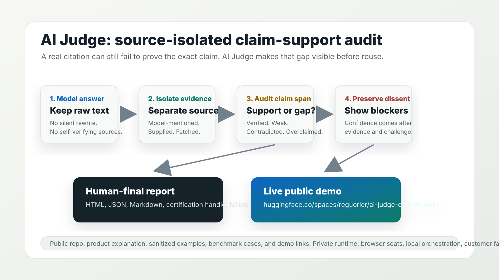
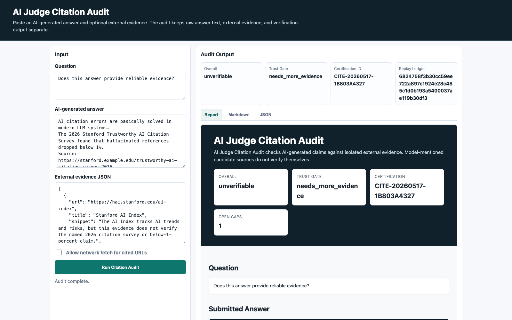

Real source, wrong claim
The URL may be genuine and still only support a weaker statement than the answer made.
A source can exist, look relevant, and still fail to prove the model's exact claim. AI Judge separates the answer, isolated evidence, dissent, overclaim checks, and final report before a human signs off.
Public materials show the trust protocol, public demos, sanitized examples, and benchmark evidence. Production runtime code, browser bridge code, model-seat orchestration, and private user artifacts stay closed.

Public-safe overview: raw model answer, isolated evidence, claim-support audit, dissent, and human-final report. Private runtime details stay out of the public repository.
AI Judge does not claim to know the truth. It asks whether the provided or fetched source supports the exact claim span in the model answer.
The URL may be genuine and still only support a weaker statement than the answer made.
Polished writing does not count as support. Missing evidence becomes visible instead of being smoothed over.
The result is a human-final report package, not a silent rewrite of the model answer.
The public surface explains the workflow. The closed runtime handles local files, browser sessions, model-seat collection, recovery, and operator controls.
The GitHub presence should be a clear product entrance, not a dump of the operating runtime.
| Public showcase | Private source of truth |
|---|---|
| Allowed: README, demo page, public docs, sanitized examples, benchmark descriptions, screenshots, and live demo links. | Private: core runtime, product API, browser/CDP bridge, model-seat adapters, local run outputs, and operator artifacts. |
| Allowed: Claim-support concepts, report format, public failure taxonomy, and aggregate validation signals. | Private: customer facts, raw seat transcripts, browser captures, credentials, outreach notes, and generated evidence packs. |
| Allowed: Public contribution prompts for hard citation and overclaim cases. | Private: implementation details that make the commercial runtime reliable. |
Use the public demo and deterministic examples to understand the product boundary without installing the private runtime.
Start with the suspicious citation sample. The useful lesson is the difference between unverifiable, weakly verified, contradicted, and overclaimed.
The public benchmark focuses on real-but-insufficient sources, fake citations, irrelevant evidence, and claim-support overreach.
# Public deterministic proof path Open: https://huggingface.co/spaces/reguorier/ai-judge-citation-audit Read: docs/TRY_AI_JUDGE_IN_3_MINUTES.md Inspect: citation-bench/citation-bench-100.jsonl Inspect: citation-bench/citation-bench-hard-11.jsonl Verify: python3 scripts/verify_public_snapshot.py

Public demo output: citation status, isolated evidence, failure reason, and report artifacts without exposing the private orchestration layer.
The public repo should collect hard public-safe examples and workflow demand. Runtime reliability work stays private.
Submit a generated claim, a public source or sanitized evidence summary, the expected label, and the exact support gap.
Keep customer facts, raw transcripts, browser screenshots, cookies, credentials, private emails, and generated evidence packs out of public issues.
The public page should help developers, partners, and early users understand the audit protocol quickly. Full runtime access stays private until there is a deliberate partner, beta, or commercial handoff.